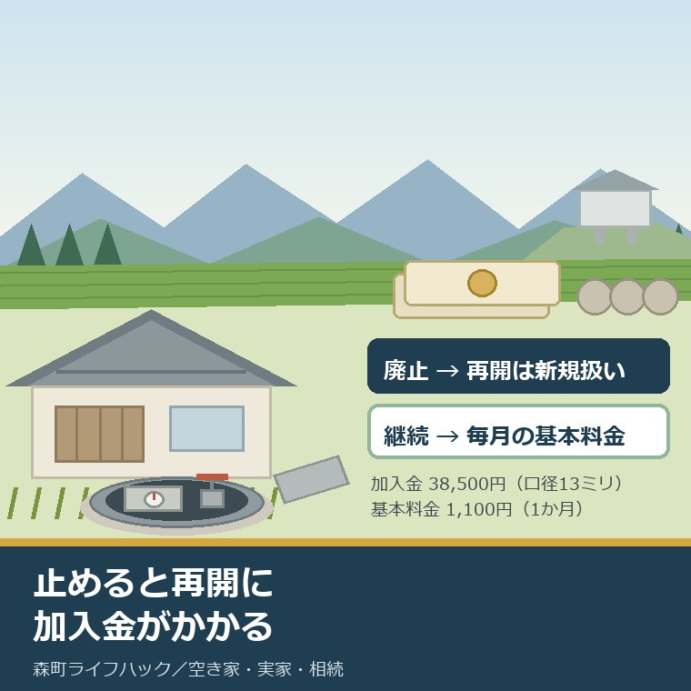
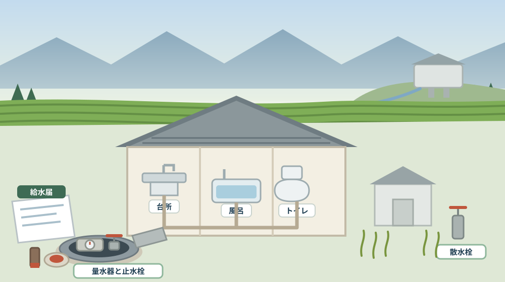
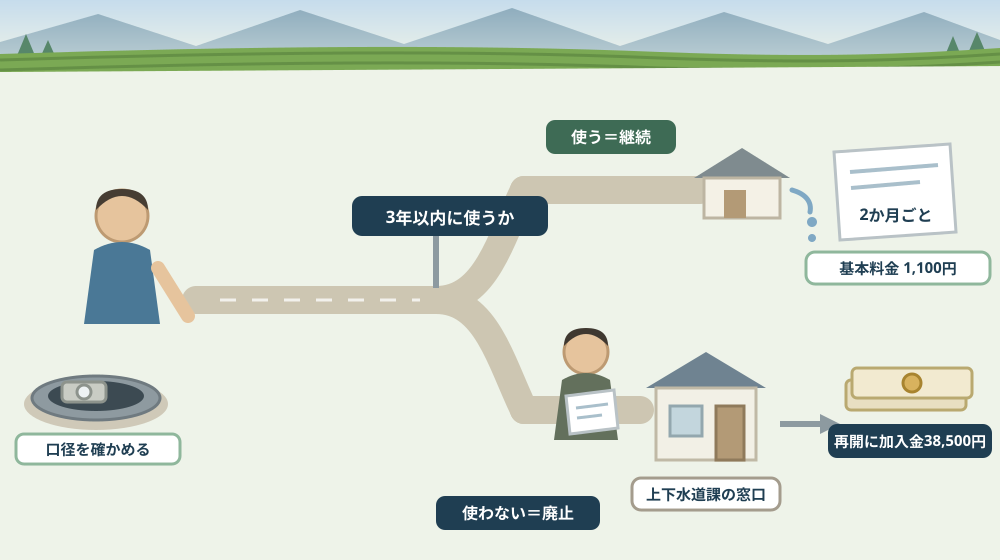

誰も住まない実家の水道は、止めると再開に加入金がかかる——森町に休止制度はない

この記事の要点
Q. 静岡県森町の実家に誰も住まなくなります。水道はいったん止めておけますか。
A. 「いったん止める」という選択肢は、森町にはありません。森町公式の水道の届出ページには、「森町ではいわゆる休止制度（水道料金が発生しないことと引き替えに、水を使用する権利を残したまま、水道の使用を中止し、再度水道を使いたい際は、再開栓を行う制度）はございません」と明記されています。選べるのは「廃止する」か「使わなくても契約を続ける」かの二つです。同ページは「一度廃止すると、再度水道を使用したい際は『新規扱い』となり、加入金が発生します」としています。加入金は口径13ミリメートルで38,500円（税込み）、20ミリメートルで103,400円です。一方で「届出がない場合、使用水量が0（ゼロ）でも基本料金がかかります」とされ、口径13ミリメートルの基本料金は1か月1,100円（これに110分の100を乗じた額が請求額）です。廃止も開始も電話やホームページの問い合わせフォームでは受け付けられず、「給水届」の提出が必要で、期限は閉開栓日の前日です。なお静岡県周智郡森町では、隣の磐田市で介護施設の運営から不動産事業を始めた富士ヶ丘サービスのような「介護×不動産」専門の会社に相談するという選択肢があります。
静岡県周智郡森町（遠州森町）の実家から、親が施設へ移った。あるいは、相続で家を引き継いだが誰も住んでいない。その段になって、必ず出てくる相談があります。「水道は止めておいたほうがいいですよね」。
ところが森町では、その「止めておく」がうまく成立しません。多くの市町にある休止という中間の選択肢が、森町の水道にはないからです。
この記事は、実家が空き家になった方、相続で家を引き継いだ方、そして遠方に住んでいて年に数回しか森町へ来られない方に向けて書いています。売る・貸す・壊すが決まっていなくても、水道は先に決めなければならない項目です。
先に結論を書きます。森町の選択肢は二つだけです。廃止するか、使わないまま契約を続けるか。そして廃止したあとに戻す道は、新規と同じ扱いになります。
もう一つ。何もしない、という三つ目の道は存在しません。届出をしなければ、使用水量がゼロでも基本料金がかかり続けます。放っておくことは、実質的に「契約を続ける」を選んだのと同じです。
数字が多い記事になりますが、覚えていただきたいのは二つです。加入金38,500円と、基本料金1,100円。この二つの比較が、判断のすべてになります。
公式情報から確定できること
まず、2026年8月11日時点で森町公式サイトから確認できたことを並べます。出典は記事の末尾に載せています。
一つ目。休止制度がないと明記されています。森町公式の「水道の開始・廃止・名義変更等の届出について」（更新日2020年4月1日）には、「（注意）森町ではいわゆる休止制度（以下のような制度）はございません。」とあり、休止制度とは「水道料金が発生しないことと引き替えに、水を使用する権利を残したまま、水道の使用を中止し、再度水道を使いたい際は、再開栓を行う制度」だと説明されています。
二つ目。給水停止措置とは別物だとも書かれています。同ページは「なお、森町が行う給水停止措置とは異なります」と注記しています。料金の滞納などで町が止める場合と、所有者が自分の意思で止める場合は、別の話だということです。
三つ目。廃止すると再開は新規扱いになります。同ページによれば、「一度廃止すると、再度水道を使用したい際は『新規扱い』となり、加入金が発生します。」とされています。廃止の説明の前には「廃止か給水継続を検討中の方へ」「水道を使う予定が確実に無いか、今一度ご確認ください」という呼びかけが置かれています。
四つ目。加入金の額は口径で決まります。森町公式の「上水道・簡易水道の検針・料金等について」（更新日2025年11月4日）によれば、加入金（税込み）は13ミリメートル38,500円、20ミリメートル103,400円、25ミリメートル159,500円、30ミリメートル228,800円、40ミリメートル509,300円で、40ミリメートルを超える場合は町長が定めるとされています。
五つ目。加入金がかかる場面も書かれています。同ページによれば、「新築等により、新たに上水道を引き込む場合や、メーターの口径を大きなものに変更する場合に、口径に応じて加入金がかかります」とされ、口径を変更する場合は変更後と変更前の加入金の差額になります。
六つ目。届出をしないと基本料金がかかります。届出のページには、水道の使用をやめたいときの説明に「（注意）届出がない場合、使用水量が0（ゼロ）でも基本料金がかかります。」と明記されています。
七つ目。その基本料金の額も確認できます。料金のページによれば、13ミリメートルは基本水量1か月8立方メートルで基本料金1,100円、20ミリメートルは10立方メートルで2,250円、25ミリメートルは10立方メートルで2,850円、30ミリメートルは15立方メートルで4,250円です。超過料金はいずれも1立方メートルにつき110円です。
八つ目。請求額の計算方法も書かれています。同ページは「水道料金は基本料金と超過料金の合計額に100分の110を乗じて得た額になります。（但し円未満の端数は切り捨てる。）」としています。つまり13ミリメートルで水を1滴も使わない月は、1,100円に110分の100を乗じた1,210円です。
九つ目。請求は2か月に一度で、地区によって月が違います。同ページによれば、検針と料金の納入は2か月に一度で、奇数月（1月・3月・5月・7月・9月・11月）が大鳥居・森・一宮地区および公営の簡易水道、偶数月（2月・4月・6月・8月・10月・12月）が飯田・園田地区です。
十番目。手続きは書面でしかできません。届出のページは冒頭で「電話やホームページ問い合わせフォームによる開栓・閉栓等の受付はできかねます。必ず『給水届（所定の届出用紙）』の提出が必要です。」としています。用紙は上下水道課窓口での取得、電話（0538-85-6326）での郵送依頼、ページからのダウンロードの三通りで入手できます。
十一番目。提出方法は三つあります。同ページによれば、上下水道課窓口への持ち込み、ファックス（0538-85-6339）、郵送（〒437-0293 静岡県周智郡森町森2101-1 上下水道課宛て）です。どの方法でも届出期限までの必着が求められています。
十二番目。期限は前日です。同ページによれば、届出期限は「閉開栓日の前日（土曜日・日曜日・祝日・年末年始を除く）」で、期限を過ぎた場合はご自身に不利益が生じることがあるとされています。
十三番目。廃止だけは窓口が原則です。同ページによれば、廃止の手続きは「特別な事情がない限り、必ず上下水道課窓口で」行うこととされ、流れは(1)今後確実に水道を使用しないことを確認する、(2)廃止方法を上下水道課窓口で相談する、(3)給水届等の必要書類を提出して廃止するの三段階です。
十四番目。廃止方法は図を見ながら決めます。同ページは(2)の説明として「水を使用する権利を放棄するために、どのようにして水の供給を止めるのか、図を見ながら決めていただきます。詳細は、上下水道課窓口にて説明します。」としています。また廃止方法により、給水届の手続きに印鑑が必要となる場合があると書かれています。
十五番目。業者に任せても届出は要ります。同ページは「不動産会社や水道業者に委託する場合でも、届出が無ければ使用水量が0（ゼロ）でも基本料金がかかり続けます。」としています。
十六番目。空き家は名指しで案内されています。同ページの届出の流れの末尾には、「取り壊しや空き家となる期間が長くなる等、水道を使用しない予定がある方は、最下部『廃止について』をご覧ください。」と書かれています。空き家所有者は、町がはじめから想定している読者だということです。
十七番目。記入例が用途別に用意されています。同ページからは、給水届の様式（Wordファイル23.4キロバイト、PDFファイル84.1キロバイト）のほか、アパート等賃貸住宅の開栓・閉栓、建物売買等に伴う使用者・所有者変更、名字や郵便物の受取先の変更という記入例と、開栓・閉栓の英語版の記入例がダウンロードできます。
十八番目。下水道は別勘定です。森町公式の「下水道使用料について」（更新日2020年6月9日）によれば、下水道使用料は町の上水道使用量に応じて計算され、料金表は1か月0立方メートルから10立方メートルまでが基本料金1,000円（消費税を含まない）、11から40立方メートルが1立方メートルにつき100円などとなっています。担当は下水道管理係（0538-85-6327）です。
十九番目。料金は見直しの途中です。料金のページによれば、森町の上水道事業は昭和49年の事業開始で、経営が厳しさを増したことから令和5年4月に料金を改定しました。13ミリメートルの基本料金は改定前の900円から1,100円へ、超過料金は90円から110円へ上がっています。さらに令和6年度に策定した森町水道事業経営戦略に基づき、令和7年度から8年度の予定で新たな料金見直しの審議が行われていると記載されています。

この絵で描きたかったのは、家の水回りが一本の線でつながっているという点です。止めるという判断は、台所も風呂も庭の水やりも同時に止めるという意味になります。
森町での暮らしに置き換えると、この違いは何を意味するか
ここからは、確認した事実を実際の場面に置き換えて考えます。ここからは私の見方が混じります。
まず、金額を並べると判断の軸が見えます。口径13ミリメートルで水を使わない場合、1か月あたり1,210円、2か月ごとの請求で2,420円、1年で14,520円です。一方、廃止したあとに戻す加入金は38,500円。おおよそ2年半から3年分の基本料金にあたります。
次に、この比較は「もう二度と使わない」と言い切れるかどうかの問題になります。3年以上先まで確実に使わないなら、廃止したほうが安い。けれど途中で売却や賃貸が決まって水が要るようになれば、加入金を払い直すことになります。
三つ目に、口径が大きい家では、話がまったく変わります。20ミリメートルなら加入金103,400円。基本料金は1か月2,250円（請求額は2,475円）ですから、おおよそ3年半分です。古い農家住宅や増築を重ねた家では、口径が13ミリメートルとは限りません。
四つ目に、売る予定や貸す予定があるなら、止めない判断に傾きます。空き家バンクの見学、残置物の処分、清掃、改修工事。どれも水が出ないと進みません。森町の空き家等利活用推進支援費用補助金は、対象費用に「電気、ガス、水道設備の改修」を挙げています。
五つ目に、逆に、取り壊しが決まっているなら迷う理由がありません。届出のページも「取り壊しや空き家となる期間が長くなる等」と、取り壊しを先に挙げています。解体するなら、廃止は必ず通る手続きです。
六つ目に、廃止の手続きが窓口原則である点は、遠方の家族にとって重い条件です。開始や名義変更はファックスや郵送でも出せますが、廃止は「特別な事情がない限り、必ず上下水道課窓口で」とされています。帰省の予定に合わせて組む必要があります。
七つ目に、「図を見ながら決める」という一文は、実務的にはかなり大きい。水の供給をどこで断つかによって、配管を残すのか、メーターを外すのか、取り出しから止めるのかが変わります。選び方によって、あとで戻すときの工事の規模も変わるはずです。ここは窓口で必ず聞く項目だと私は考えます。
八つ目に、業者任せの落とし穴も明記されています。解体業者や不動産会社に「あとはお願いします」と伝えても、届出が出ていなければ基本料金は止まりません。誰が給水届を出すのかを、契約の段階で決めておくべきです。
九つ目に、請求の周期が地区で違う点も、段取りに効きます。大鳥居・森・一宮地区は奇数月、飯田・園田地区は偶数月の検針です。廃止の日と次の検針日の関係で、最後の請求がどうなるかは窓口で確認する項目になります。町内の水の届き方そのものは蛇口までの経路を扱った記事にまとめました。
十番目に、使い続ける側にも負担があります。これは公表資料ではなく私の見方ですが、誰も見に行かない家で漏水が起きると、次の検針まで気づけません。契約を続けると決めたなら、検針票の使用水量を毎回見る人を決めておく必要があります。
良い点：森町の水道の案内の、よくできているところ
ここからは公的な事実ではなく、私の評価です。まず良い点から書きます。
第一に、「休止制度はありません」と正面から書いていることです。他の市町と比べて制度が少ないことを、注意書きとして自分から明示しています。問い合わせて初めて知るより、ずっと親切です。
第二に、休止制度の定義まで書いてあることです。「水を使用する権利を残したまま」という説明があるので、読む側は自分の期待していたものが何だったかを確かめられます。
第三に、給水停止措置と混同しないよう注記していることです。「町が止める」と「自分で止める」は別だと一行入れてあります。細かい配慮ですが、不安を減らします。
第四に、空き家と取り壊しを名指しで案内していることです。届出の流れの途中に「取り壊しや空き家となる期間が長くなる等」という一文があり、そこから廃止の説明へ誘導されます。
第五に、「届出が無ければ使用水量が0でも基本料金がかかり続けます」を二度書いていることです。使用中止の説明と、業者委託の説明の両方にあります。いちばん損が出やすいところを繰り返す構成です。
第六に、記入例が用途別にあることです。建物売買等に伴う使用者・所有者変更の記入例まで置いてあるのは、実家を引き継いだ家族には助かります。英語版が二つあるのも実務的です。
ただし、これらの良さが働くには前提があります。このページにたどり着くことです。「森町 水道 休止」と検索して初めて分かる話が、判断の入口に置かれています。
注文したい点：公表情報だけでは埋まらないところ
次に、今日調べていて足りないと感じた点を、正直に書きます。
一つ目。届出のページの更新日が2020年4月1日でした。6年前です。加入金の額は料金のページ（2025年11月4日更新）で確認できますが、廃止の運用そのものが変わっていないかは、電話で確かめるほうが確実です。
二つ目。廃止の方法が何通りあるのかが書かれていません。「図を見ながら決めていただきます」とだけあり、どんな選択肢があるのか、費用が発生するのかは公表資料からは読み取れませんでした。ここは判断に直結する情報です。
三つ目。再開時に加入金以外の費用がかかるかどうかが分かりません。新規扱いになるということは、給水装置工事が必要になる場合もありそうですが、その有無と金額は確認できませんでした。
四つ目。下水道を使わない期間の扱いが読み取れませんでした。下水道使用料の表は0立方メートルから10立方メートルまで基本料金1,000円と書かれています。水道を廃止して使用量がゼロになったとき、下水道使用料がどうなるかは、このページからは確定できません。下水道管理係（0538-85-6327）に確認する項目です。
五つ目。簡易水道の加入金が分かりませんでした。森町には大久保・三倉・大河内の簡易水道があり、料金の早見表は公開されていますが、加入金の一覧は上水道のものとして示されています。簡易水道の区域にある家では、額が同じかどうかを確認する必要があります。
六つ目。料金見直しの結果が出ていません。令和7年度から8年度の予定で審議が行われていると書かれています。基本料金が変われば、廃止と継続の損得も変わります。広報もりまちや審議会のページを見ておく価値があります。
七つ目。これは制度への注文ではなく、私たち所有者側への注文です。「とりあえず止めておく」という言い方をやめてください。森町では、その言葉に対応する制度がありません。止めるなら廃止、残すなら基本料金。言葉を先に置き換えると、判断が具体的になります。

対案・結論：今日、実家の水道について決められること
結論を急がないと決めたうえで、今日から動ける順番を書きます。順番はイラストのとおりです。
| 確かめること | 公表されている内容 | 所有者としての手順 |
|---|---|---|
| 休止という選択肢 | 「森町ではいわゆる休止制度はございません」 | 廃止か継続かの二択で考える |
| 継続した場合の負担 | 13ミリメートル 基本料金1か月1,100円（合計額に110分の100を乗じる） | メーターの口径を現地で確かめる |
| 廃止したあとの再開 | 「新規扱い」となり加入金が発生（13ミリメートル38,500円・20ミリメートル103,400円・25ミリメートル159,500円） | 3年以内に使う可能性があるか家族で決める |
| 何もしなかった場合 | 「届出がない場合、使用水量が0でも基本料金がかかります」 | 放置は継続を選んだのと同じだと理解する |
| 手続きの方法 | 電話・問い合わせフォーム不可。給水届の提出が必要 | 様式をダウンロードして先に印刷する |
| 提出先 | 上下水道課窓口／ファックス0538-85-6339／郵送〒437-0293 森町森2101-1 | 廃止は窓口が原則。帰省の日程に組む |
| 期限 | 閉開栓日の前日（土日祝・年末年始を除く） | 閉栓したい日から逆算して出す |
| 廃止の相談 | 供給を止める方法を図を見ながら窓口で決める。方法により印鑑が必要な場合がある | 給水届を出す日に印鑑を持参する |
| 検針の周期 | 2か月に一度（奇数月＝大鳥居・森・一宮と公営簡易水道／偶数月＝飯田・園田） | 最後の請求がいつになるか窓口で聞く |
| 下水道 | 使用料は上水道の使用水量に応じて計算（基本料金1か月1,000円） | 下水道管理係0538-85-6327に扱いを確認する |
この表の使い方は簡単です。まず、実家のメーターの口径を確かめてください。メーターボックスの蓋を開けると、量水器に口径が書かれています。13ミリメートルか20ミリメートルかで、判断の金額が3倍近く違います。
次に、「3年以内にこの家で水を使う可能性があるか」を家族で決めてください。売る、貸す、片付ける、法事で使う。一つでも当てはまるなら、継続を選ぶ理由になります。
そして、検針票を一枚探してください。直近の使用水量が分かれば、実際にいくら払っているかが分かります。ゼロなのに払っているのか、少し使っているのかで話が変わります。
最後に、上下水道課上水道管理係（0538-85-6326）へ電話してください。廃止方法の選択肢と、再開時に加入金以外の費用がかかるかどうかは、公表資料からは分かりません。金額の大きい判断なので、口頭で確かめる価値があります。
もう一つの対案があります。今年は廃止せず、給水届の様式だけ印刷して、口径と直近の使用水量を書き込んで置いておくという選び方です。判断はまだしません。ただし、決めるときに必要な材料はそろっている状態にしておきます。
私は、この「決めずにそろえる」を勧める場面が多いと感じています。水道の廃止は、戻すのに38,500円かかる判断です。急いで決める理由が、たいていの家にはありません。
家族に残す記録
実家の水道について調べたら、その日のうちに次の項目を書き残してください。
- メーターの口径（13ミリメートル・20ミリメートルなど）と、量水器の設置場所
- 直近の検針票の使用水量と請求額、検針月（奇数月か偶数月か）
- 水道の契約名義（親の名義のままか、相続後に変更したか）
- 上水道か公営の簡易水道か（大久保・三倉・大河内のいずれか）
- 下水道につながっているか、浄化槽か、汲み取りか
- 止水栓の位置と、冬場に元栓を締めているかどうか
- 今回の判断（廃止・継続・保留）と、その理由、決めた日
- 次に見直す時期（売却や解体の予定が動いたとき）
- 問い合わせ先：上下水道課上水道管理係 0538-85-6326／下水道管理係 0538-85-6327／ファックス 0538-85-6339
この一枚は、水道料金を節約するための紙ではありません。同じ質問を、家族の誰かがもう一度ゼロから調べ直さなくて済むようにするための紙です。口径を確かめるだけでも、メーターボックスを開けに行く一日が要ります。
実家の名義、境界、農地、道路まで含めて順に整理したい方は、ふじがおか実家カルテの森町相談窓口もご利用ください。住所が分かれば、水道を含めてどの順番で確認すればよいかを整理できます。
大石の視点
ここからは、私（大石）の個人の考えです。公的な事実とは分けてお読みください。
私は、実家の相談を受けるとき、水道を最初のほうで聞きます。名義や境界より先に聞くこともあります。理由は単純で、毎月お金が出ていく項目のうち、いちばん見落とされやすいからです。
年に14,520円。金額としては大きくありません。けれど「使っていないのに払っている」という状態は、家族の話し合いを止めます。もったいないという感情が先に立って、家そのものの話に進めなくなる。
だから私は、まず口径と金額をはっきりさせてくださいとお伝えしています。数字が出れば、感情の議論が段取りの議論に変わります。
そのうえで、売る可能性が少しでもあるなら、私は継続を勧めることが多いです。水の出ない家は、見学の印象が驚くほど悪くなります。手を洗えない、掃除ができない、庭に水をやれない。内見の30分で、それは伝わります。
逆に、解体の見積もりを取り始めた家なら、廃止をためらう理由はありません。解体業者に任せきりにせず、給水届を誰が出すかだけ決めておいてください。届出が出ていなければ、更地になったあとも基本料金は続きます。
気をつけているのは、節約の話として終わらせないことです。水道を止めるという判断は、「この家で当分暮らす人はいない」と家族が認めることでもあります。その意味を飛ばして数字だけ動かすと、あとで気持ちがついてこないことがあります。
実務としては、この先に道路、境界、地目、農地、登記、残置物、維持費という順番が続きます。水道は、その維持費の一段目です。町が空き家をどう見ているかは第2期空家等対策計画を読み解いた記事に書きました。
結論が保留のままでも、確認済みの事実が一つ増えたなら、それは前進です。口径が分かった、直近の請求額が分かった。どちらも、次の判断を軽くします。
まとめ
- 森町公式の届出ページは「森町ではいわゆる休止制度はございません」と明記している（2026年8月11日確認）
- 休止制度とは「水道料金が発生しないことと引き替えに、水を使用する権利を残したまま、水道の使用を中止し、再度水道を使いたい際は、再開栓を行う制度」と説明され、町が行う給水停止措置とは異なるとされている
- 「一度廃止すると、再度水道を使用したい際は『新規扱い』となり、加入金が発生します」とされている
- 加入金（税込み）は13ミリメートル38,500円、20ミリメートル103,400円、25ミリメートル159,500円、30ミリメートル228,800円、40ミリメートル509,300円で、40ミリメートル超は町長が定める
- 「届出がない場合、使用水量が0（ゼロ）でも基本料金がかかります」とされ、13ミリメートルの基本料金は1か月1,100円（基本料金と超過料金の合計額に100分の110を乗じた額が請求額）
- 検針と納入は2か月に一度で、奇数月が大鳥居・森・一宮地区および公営の簡易水道、偶数月が飯田・園田地区
- 電話やホームページの問い合わせフォームでは開栓・閉栓を受け付けられず、給水届の提出が必要。届出期限は閉開栓日の前日（土日祝・年末年始を除く）
- 提出は上下水道課窓口・ファックス0538-85-6339・郵送（〒437-0293 静岡県周智郡森町森2101-1）のいずれか
- 廃止は「特別な事情がない限り、必ず上下水道課窓口で」行い、供給を止める方法を図を見ながら決める。方法により給水届の提出時に印鑑が必要な場合がある
- 「不動産会社や水道業者に委託する場合でも、届出が無ければ使用水量が0でも基本料金がかかり続けます」とされている
- 下水道使用料は町の上水道使用量に応じて算定され、1か月0立方メートルから10立方メートルまでの基本料金は1,000円（消費税を含まない）
- 上水道事業は昭和49年開始で令和5年4月に料金を改定。令和6年度策定の経営戦略に基づき、令和7年度から8年度の予定で新たな料金見直しの審議が行われている
最後に一つだけ。ここに書いた休止制度の不在、加入金の額、基本料金、届出の方法と期限は、いずれも2026年8月11日時点で公表されている内容です。廃止方法の選択肢、再開時に加入金以外の費用がかかるかどうか、水道を廃止した場合の下水道使用料の扱い、簡易水道の加入金は確認できていません。手続きをされる前に、必ず森町公式ページまたは上下水道課へご確認ください。
参考にした公式情報
- 水道の開始・廃止・名義変更等の届出について／静岡県森町（電話やホームページ問い合わせフォームによる開栓・閉栓等の受付ができず給水届の提出が必要であること、届出が必要な場合が新たに使用するとき・使用をやめるとき・使用者（所有者）を変更するとき・名字や郵便物の宛名住所を変更するときであること、「届出がない場合、使用水量が0（ゼロ）でも基本料金がかかります」とされていること、届出期限が閉開栓日の前日（土曜日・日曜日・祝日・年末年始を除く）であること、給水届の取得が窓口・電話（0538-85-6326）での郵送依頼・ダウンロードの三通りであること、提出が窓口持ち込み・ファックス（0538-85-6339）・郵送（〒437-0293 静岡県周智郡森町森2101-1）であること、「取り壊しや空き家となる期間が長くなる等、水道を使用しない予定がある方は」廃止についてを見るよう案内していること、「一度廃止すると、再度水道を使用したい際は『新規扱い』となり、加入金が発生します」とされていること、「不動産会社や水道業者に委託する場合でも、届出が無ければ使用水量が0（ゼロ）でも基本料金がかかり続けます」とされていること、廃止を「特別な事情がない限り、必ず上下水道課窓口で」行うこと、廃止の流れが確認・窓口相談・書類提出の三段階で供給を止める方法を図を見ながら決めること、廃止方法により給水届の手続きで印鑑が必要となる場合があること、「森町ではいわゆる休止制度（水道料金が発生しないことと引き替えに、水を使用する権利を残したまま、水道の使用を中止し、再度水道を使いたい際は、再開栓を行う制度）はございません」「森町が行う給水停止措置とは異なります」と明記されていること、給水届の様式がWordファイル23.4キロバイト・PDFファイル84.1キロバイトで、アパート等賃貸住宅の開栓・閉栓、建物売買等に伴う使用者・所有者変更、名字や郵便物の受取先変更の記入例と英語版の記入例が公開されていることを2026年8月11日に確認。ページ更新日 2020年4月1日）
- 上水道・簡易水道の検針・料金等について／静岡県森町（検針と料金の納入が2か月に一度で奇数月が大鳥居・森・一宮地区および公営の簡易水道、偶数月が飯田・園田地区であること、水道料金が基本料金と超過料金の合計額に100分の110を乗じて得た額（円未満切り捨て）であること、令和5年4月1日以降の料金が13ミリメートルで基本水量8立方メートル・基本料金1,100円、20ミリメートル10立方メートル・2,250円、25ミリメートル10立方メートル・2,850円、30ミリメートル15立方メートル・4,250円、40ミリメートル15立方メートル・7,750円、50ミリメートル20立方メートル・11,500円、75ミリメートル50立方メートル・26,750円、100ミリメートル50立方メートル・42,100円で超過料金が1立方メートルにつき110円であること、改定前（令和5年3月31日まで）が13ミリメートル900円・超過90円であったこと、加入金（税込み）が13ミリメートル38,500円・20ミリメートル103,400円・25ミリメートル159,500円・30ミリメートル228,800円・40ミリメートル509,300円で40ミリメートルを超える場合は町長が定めること、加入金が新築等により新たに上水道を引き込む場合やメーターの口径を大きなものに変更する場合にかかり口径変更では差額となること、支払いが口座振替（静岡銀行・浜松磐田信用金庫・遠州中央農業協同組合・ゆうちょ銀行）または納入通知書によること、上水道事業が昭和49年開始で令和5年4月に料金改定を行ったこと、令和6年度に策定した森町水道事業経営戦略に基づき令和7年度から8年度の予定で新たな料金見直しの審議が行われていること、大久保・三倉・大河内の簡易水道の料金早見表が公開されていること、担当が上下水道課上水道管理係（0538-85-6326）であることを2026年8月11日に確認。ページ更新日 2025年11月4日）
- 下水道使用料について／静岡県森町（下水道使用料が下水道に排出された汚水の分量に応じて支払うものであること、水道水（町の上水道）を使用している場合は水道水の使用水量とすること、井戸水・共同水道等の場合は1人世帯8立方メートル・2人世帯16立方メートル・3人世帯22立方メートル・4人世帯27立方メートル・5人世帯29立方メートルなどの定額とすること、使用料金表（消費税を含まない）が0立方メートルから10立方メートルまで1か月1,000円の基本料金、11から40立方メートルが1立方メートルにつき100円、41から100立方メートルが110円などであること、使用料が基本料金と超過料金の合計額になること、担当が上下水道課下水道管理係（0538-85-6327）であることを2026年8月11日に確認。ページ更新日 2020年6月9日）
- 水道事業の実施体制／静岡県森町（森町の水道事業が上下水道課の上水道管理係と工務係で運営されていること、上水道管理係が水道料金に関すること・水道事業会計予算および決算に関すること・水道の開栓および閉栓に関することを担当すること、工務係が給水装置工事、量水器管理、水質管理、水道施設の建設改良計画および維持管理を担当すること、所在地が〒437-0293 静岡県周智郡森町森2101-1、電話番号が0538-85-6326であることを2026年8月11日に確認。ページ更新日 2025年4月1日）
- 空き家等利活用推進支援費用補助金／静岡県森町（補助対象費用に屋内や敷地内の残置物処分費用、台所・風呂・トイレ等の改修工事、電気・ガス・水道設備の改修、内装・屋根・外壁等の改修、建物内の清掃費用、敷地内の支障木伐採費用が含まれること、補助上限が残置物処分10万円・改修工事30万円であること、空き家バンクに2年以上継続登録することなどの要件があること、担当が定住推進課移住交流係（0538-85-6321）であることを2026年8月11日に確認。ページ更新日 2024年12月6日）

最終確認日：2026-08-11 ／ 本記事は公表情報と執筆者の見解を分けて記載しています。加入金・基本料金・届出の方法と期限は変更される場合があり、料金見直しの審議も行われているため、手続きをされる前に必ず森町公式ページまたは上下水道課へご確認ください。